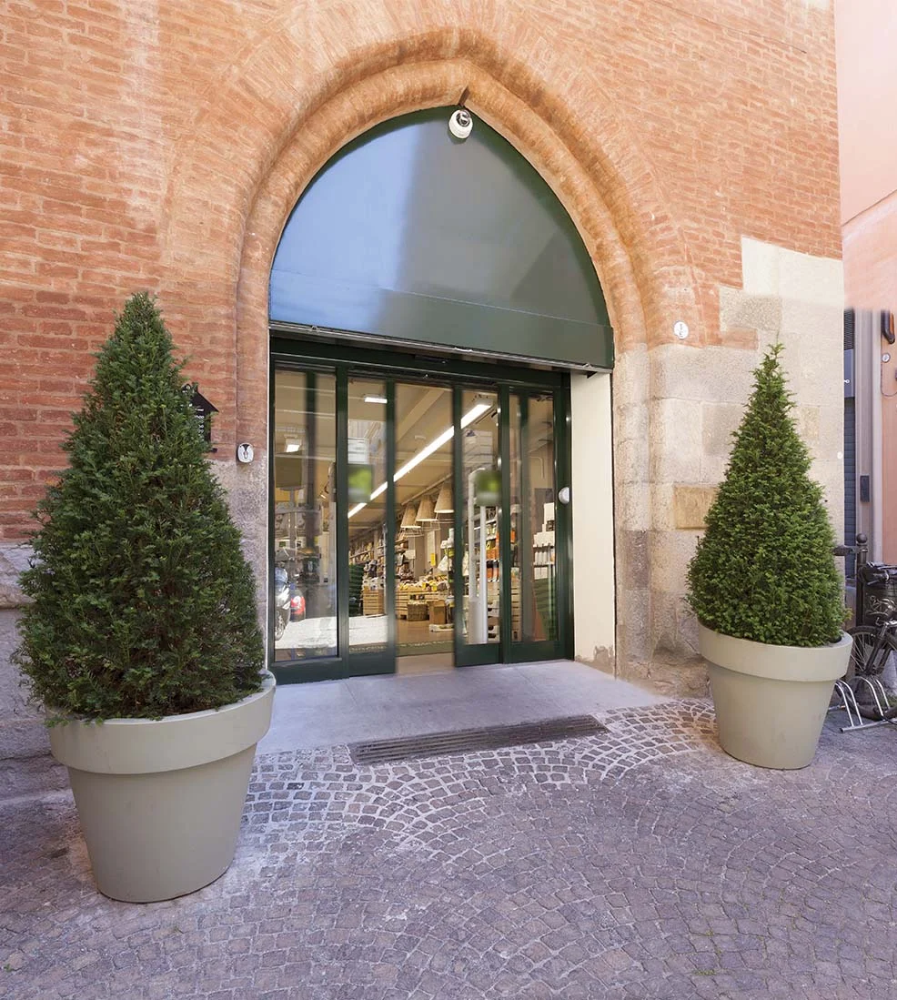
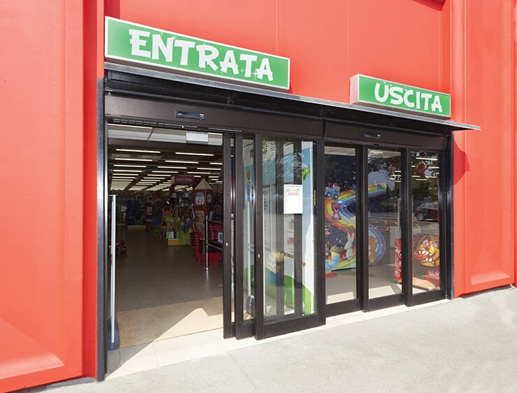
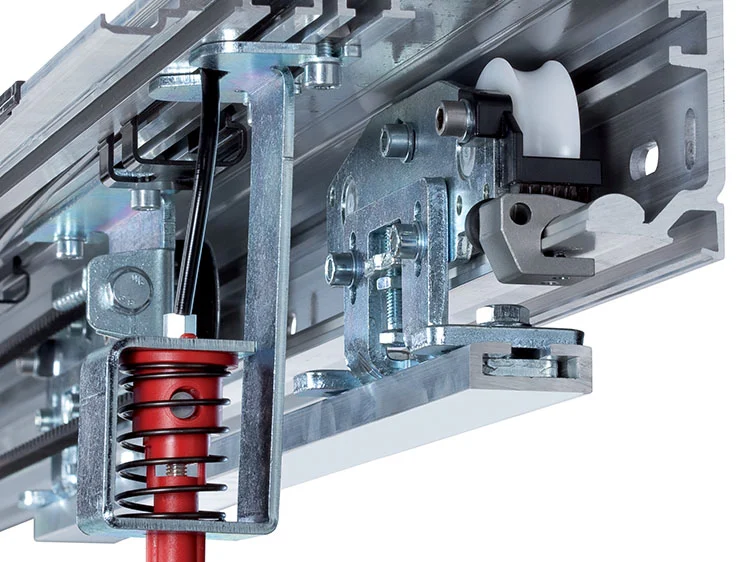

Automatizaciones para puertas corredizas con peso de hasta 1200 Kg


Las automatizaciones FAAC SERIE A1400 AIR están diseñadas para automatizar accesos cumpliendo la Normativa Europea EN 16005, capaces de satisfacer los más estrictos criterios de seguridad según EN 13489-1 PL C.
Gracias a su innovador dispositivo "Energy Saving", detecta la dirección de tránsito y optimiza los tiempos de apertura/cierre evitando pérdidas de aire innecesarias, incluso en pasajes laterales.

El FAAC A1400 ofrece una automatización robusta, silenciosa y de alto rendimiento. Su avanzado control inteligente E2SL permite configurar tanto funciones básicas como avanzadas directamente desde la placa electrónica, sin necesidad de equipos adicionales.
Incluye gestión de sensores, sistemas de interbloqueo y parámetros personalizables, mientras que sus carros de precisión y el perfil de aluminio reforzado aseguran un movimiento suave, estable y silencioso. Una solución ideal para entornos residenciales, comerciales e industriales que demandan calidad y fiabilidad.
Información técnica